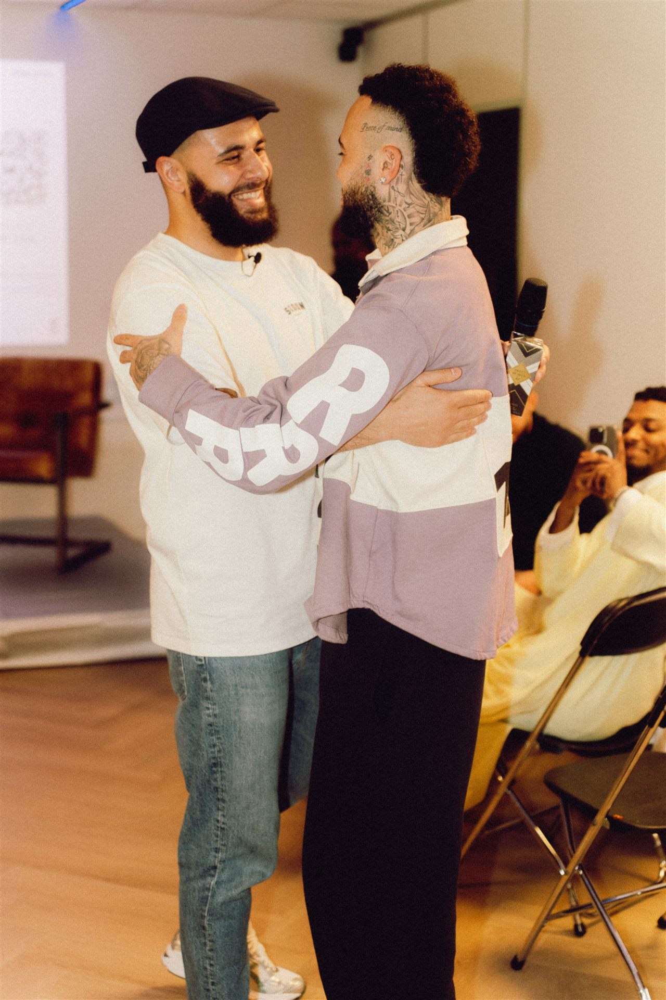
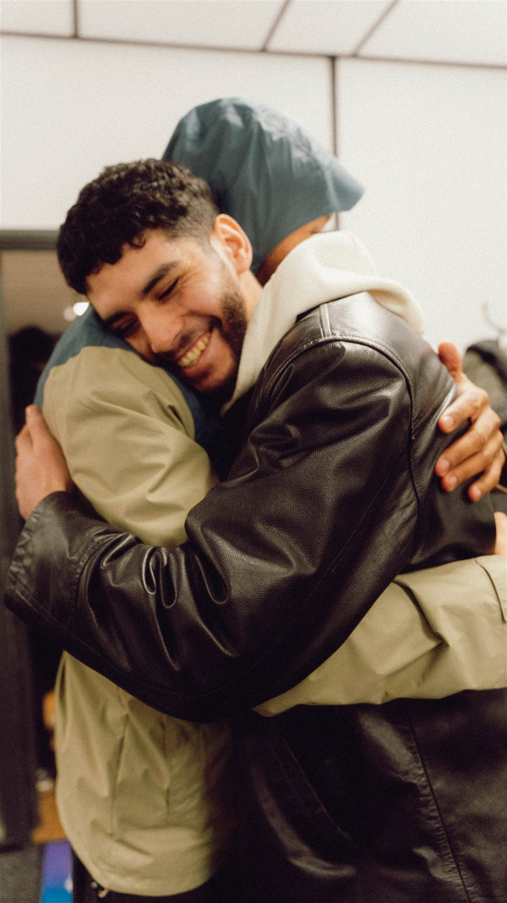

Stichting De Terugkeer
Mensen verbinden door educatie, ontmoeting en begeleiding vanuit islamitische waarden.


Wie Zijn Wij
Wij hebben door de jaren heen veel bekeerlingen ontmoet. Ieder met een eigen verhaal, eigen pijn en eigen hoop. Wat ons steeds opnieuw raakte, is dat de weg na de shahada vaak zwaarder is dan vooraf wordt gedacht. Het begin is mooi en intens, maar daarna begint de echte uitdaging: standvastig blijven terwijl alles om je heen blijft bewegen.
We leven in een tijd waarin het internet nooit slaapt. Informatie is overal, meningen vliegen alle kanten op, maar echte begeleiding is schaars. Veel bekeerlingen staan er alleen voor, vaak in een omgeving die hun groei in de islam niet begrijpt of zelfs tegenwerkt.
Vanuit onze ervaring zien wij dat omgeving, kennis en stap-voor-stap groei het verschil maken. Geen haast, geen druk, maar begeleiding met begrip en diepgang.
"Standvastig blijven terwijl alles om je heen blijft bewegen. Daar zijn wij voor."
Daarom bouwen wij aan een veilige haven. Een plek waar je welkom bent om te leren en te groeien. Waar lessen worden gegeven met hart en inhoud. Waar broederschap voelbaar is. En waar ook niet-moslim familie welkom is. In shaa Allah openen wij hiervoor een locatie in Rotterdam.
Mensen verbinden door educatie, ontmoeting, begeleiding en maatschappelijke activiteiten vanuit islamitische waarden zoals respect, oprechtheid, standvastigheid en verantwoordelijkheid.
Een samenleving waarin mensen elkaar beter begrijpen, zich kunnen ontwikkelen en actief bijdragen aan een sterke gemeenschap.
Samenhorigheid en gemeenschapszin bevorderen door lezingen, cursussen, workshops, mentortrajecten en maatschappelijke projecten — met als doel een eigen fysiek pand te realiseren.
Voor alle geïnteresseerden, bekeerlingen en de moslim.
Niet-moslims, geïnteresseerden, bekeerlingen, geboren moslims en iedereen die wil leren of wil bijdragen aan verbinding. Ook niet-moslim familieleden zijn van harte welkom om te begrijpen en mee te groeien. Geen vraag is te groot of te klein.
Het bestuur bestaat uit een voorzitter, secretaris en penningmeester. Onder het bestuur functioneren vrijwilligers en werkgroepen voor activiteiten, communicatie, fondsenwerving en financiën.
Oprichter
Guus Baars
Voorzitter
Jazzley John
Penningmeester
Karim El Mahjoubi
Secretaris
Ismail Farissi
De hoofdlijnen van ons beleid: waar we naartoe werken, hoe we ons financieren en hoe we verantwoording afleggen.
De stichting bouwt een bestemmingsreserve op met een streefbedrag van €950.000 voor de aankoop en inrichting van een multifunctioneel centrum voor educatie, ontmoeting en begeleiding. Het centrum wordt gebruikt voor lessen, lezingen, spreekkamers, media, jongerenactiviteiten en gemeenschapsvorming.
Alle inkomsten worden besteed aan de doelstellingen van de stichting. De stichting voert een transparante administratie en publiceert jaarlijks een activiteitenverslag en financiële verantwoording.
| Jaar | Begroting |
|---|---|
| 2026 | €50.000 |
| 2027 | €100.000 |
| 2028 | €250.000 |
| 2029 | €300.000 |
| 2030 | €250.000 |
| Streefbedrag huisvestingsfonds | €950.000 |
Bestuurders ontvangen geen beloning voor hun werkzaamheden. Alleen aantoonbare, gemaakte onkosten worden conform de statuten vergoed na overlegging van bewijsstukken.
Vrijwilligers worden niet betaald, maar kunnen wel een vergoeding ontvangen voor gemaakte onkosten na overlegging van bewijsstukken.
Indien personeel wordt aangesteld, gebeurt dit op basis van marktconforme voorwaarden.
Stichting de Terugkeer is opgericht op 26 januari 2026. Ten behoeve van de ANBI-status publiceert de stichting op haar website: naam, RSIN, contactgegevens, doelstelling, de hoofdlijnen van het beleidsplan, de bestuurssamenstelling, het beloningsbeleid, en jaarlijks een activiteitenverslag en financiële verantwoording.